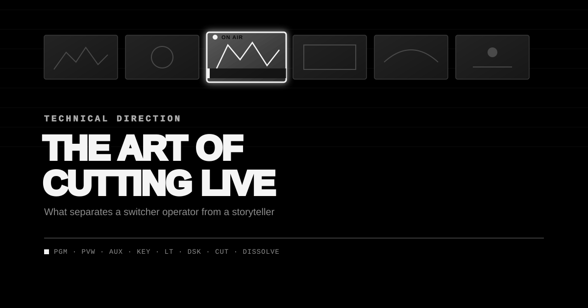

Live Appearance
I joined Office Hours Global for a live conversation on this exact topic — timing, anticipation, restraint, and the creative partnership between a TD and camera operators.
Say "Technical Director" and most people picture someone parked behind a switcher, punching buttons. That's the mechanics of the job. It's not the job.
The best Technical Directors are visual storytellers. Every cut, dissolve, and hold shapes how an audience experiences a performance. Whether it's a concert, a festival, a corporate keynote, a worship service, or a live broadcast, the TD's real task isn't switching cameras — it's telling the story happening on stage.
I was recently on the Main Stage crew at a major state fair, where every act brought its own energy and visual identity. Some sets called for fast, punchy cutting that matched the music beat for beat. Others needed patience — long holds that let an emotional moment breathe. It was a good reminder of something I've believed for years: every production has its own rhythm, and the TD's job is to find it, not impose one.
Storytelling, One Shot at a Time
Cutting live isn't about proving you have six cameras by using all six. It's about showing the right one at the right moment.
Every choice carries weight:
- Stay wide to hold the atmosphere?
- Push in tight for an emotional lyric?
- Find the guitarist before the solo hits?
- Cut to the crowd's reaction?
- Or just hold the shot a beat longer?
Often the boldest move is not cutting at all. Letting a strong performance play out in one well-composed frame can land harder than a flurry of switches. Pacing matters as much as movement — sometimes more.
Why So Many Great TDs Started as Editors
A lot of the best live Technical Directors came up through television, film, or post-production editing. Editors spend years building an instinct for rhythm, continuity, and when a cut helps a story versus when it breaks it.
Live production asks for the same judgment, minus the luxury of time. There's no replay, no second take — just the next frame. That editorial instinct, developed anywhere, becomes one of the sharpest tools a live TD can bring to the chair.
Timing Is the Whole Job
Anyone can memorize where the buttons are. Knowing when to press them is what separates a good TD from a forgettable one.
Great TDs aren't just watching monitors — they're listening. They feel the tempo building, catch a lighting cue before it lands, sense a vocalist heading into the chorus, know when the drummer's about to crash into the next section, and recognize when the crowd's reaction is the story.
Good timing is invisible. Bad timing never is.
A TD Is Only as Good as the Shots Available
Even the sharpest TD is limited by what the cameras give them — which is why great camera operators are irreplaceable.
Some operators wait for instructions. The best ones are already ahead of the moment: reframing, tracking the performer, hunting for the crowd shot before anyone calls for it. I think of it as fishing — constantly working the water for the next great composition instead of waiting to be told where to point the lens.
Whether the rig is handheld, long-lens, Steadicam, jib, or a robotic PTZ, the principle doesn't change: anticipation beats reaction, every time. When a TD is working with operators who think a beat ahead, every call gets easier because the next great shot is already there, waiting.
Shows Are Won Before They Start
The best TDs don't show up hoping it comes together. They prepare — attending rehearsals, studying the stage layout, learning camera assignments, understanding the lighting cues, and getting a sense of where the key moments are likely to hit.
That preparation is what allows them to anticipate instead of react once the show is live.
Technology Sets the Table — It Doesn't Cook the Meal
Modern switchers are remarkable. Barco Event Master, Analog Way LivePremier, Ross Video, Sony, Grass Valley, Blackmagic — the tools today offer creative flexibility that didn't exist a decade ago.
But no switcher makes compelling television by itself. People do — through experience, taste, timing, and storytelling instinct. None of that can be automated.
The Real Measure of the Job
Nobody leaves a show remembering how many cuts happened. They remember how it made them feel.
That's the whole job, really. The best Technical Directors never try to become the show. They serve the performance, trust their operators, and understand timing well enough to disappear into the story.
The highest compliment a TD can get: nobody noticed the switching at all — because every cut belonged, and the story simply unfolded the way it was supposed to.